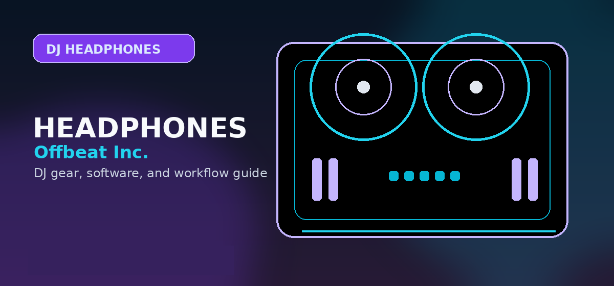

Best DJ Headphones 2026: Club-Ready Picks Tested
Sennheiser HD 25 vs Pioneer HDJ-X10 vs Sony MDR-7506 — tested for isolation, one-ear monitoring, and durability.

Disclosure: This page uses affiliate links. We may earn a commission at no extra cost to you. Full disclosure →
DJ headphones need three things laptop/studio headphones don't: single-ear monitor capability (swivel), 100+ dB SPL for loud club environments, and enough clamp force to stay on while moving. We tested 8 models across these specific criteria.
DJ Headphone Comparison
| Model | Price | Impedance | SPL Max | Swivel | Verdict |
|---|---|---|---|---|---|
| Sennheiser HD 25 Top Pick | $149 | 70Ω | 120 dB | Yes (both cups) | Industry standard for club DJs |
| Pioneer HDJ-X10 | $299 | 32Ω | 108 dB | Yes | Best sound quality overall |
| Sony MDR-7506 | $99 | 63Ω | 106 dB | Single-cup only | Best under $100 |
| Audio-Technica ATH-M50x | $149 | 38Ω | 99 dB | Single-cup only | Good for home practice, not club |
| Pioneer HDJ-X5 | $99 | 32Ω | 102 dB | Yes | Budget club option |
| V-Moda M-100 Master | $199 | 32Ω | 103 dB | Yes | Best durability |
Check current prices for the headphones compared here
The comparison above only helps if the model is actually in stock at a sane price. Club DJs should compare isolation and replaceable parts first, studio-first buyers should prioritize accuracy, and budget buyers can also check DJ headphones under $100 before paying for a flagship pair. Use these links to check the current street price for each headphone before deciding.
Sennheiser HD 25
Check current price, availability, shipping, and return policy.
Shop Sennheiser HD 25 →Pioneer HDJ-X10
Check current price, availability, shipping, and return policy.
Shop Pioneer HDJ-X10 →Audio-Technica ATH-M50x
Check current price, availability, shipping, and return policy.
Shop Audio-Technica ATH-M50x →V-Moda M-100 Master
Check current price, availability, shipping, and return policy.
Shop V-Moda M-100 Master →Sennheiser HD 25 — Best DJ Headphones Overall
The HD 25 has been the booth standard since 1988 for concrete reasons: 120 dB SPL handles the loudest club monitors, both cups swivel 180° for one-ear monitoring, and the modular design means you can replace every component (cable, pads, headband, drivers) individually. Replacement cable: $15. Replacement ear pads: $20. Expected lifespan: 10+ years.
Confirm today’s price, stock, and return policy before buying.
Sony MDR-7506 — Best Under $100
At $99, the MDR-7506 delivers accurate sound reproduction (designed for studio monitoring). One cup swivels. The coiled cable (3m) is ideal for mixing desks but annoying for mobile DJs. Downside: 106 dB max SPL is adequate for home or small venues but can be drowned out by loud club monitoring.
Confirm today’s price, stock, and return policy before buying.
Pioneer HDJ-X10 — Best Sound Quality
The HDJ-X10 ($299) uses 40mm liquid-crystal polymer drivers with a frequency response of 5Hz–40kHz — wider than any other DJ headphone tested. This dynamic range matters for mixing in key: subtle harmonic clashes that are inaudible on cheaper headphones become obvious. Justified at $299 for serious performers.
Confirm today’s price, stock, and return policy before buying.
Our Final Recommendation
Best overall: Sennheiser HD 25 ($149) — the club standard for 30+ years, designed for DJ use. Best sound quality: Pioneer HDJ-X10 ($349). Best budget: Sony MDR-7506 ($99) for home practice and monitoring.
Also on zZounds
Flexible financing · No credit check · 45-day price guarantee.
Practical checklist before you decide
Use this page as one part of the decision, not the whole decision. Confirm the current price, software compatibility, operating-system support, and whether the option still fits the way you actually practice or perform.
- Fit: choose the option that matches your current workflow and the setup you expect to use for the next year.
- Compatibility: verify exact hardware, app, subscription, and file-format requirements before buying or switching.
- Reliability: avoid workflows that depend on one fragile adapter, one unstable app version, or an internet connection with no backup.
- Upgrade path: favor tools that can grow with you instead of forcing another purchase as soon as you start recording mixes or playing longer sets.
How to use this guide in a real DJ setup
Before changing gear, software, or workflow, connect the recommendation to an actual use case: home practice, recorded mixes, streaming, mobile events, club preparation, or production crossover. A choice that looks best on paper can still be wrong if it adds setup friction or does not match the way you will play.
The safest workflow is to test the setup exactly as you will use it, then document the cable path, software version, library source, and backup plan. That prevents most of the avoidable failures that happen when DJs buy the right-looking tool but never validate the whole system.
Buying advice and compatibility checks
Use this section to sanity-check the DJ headphones against your actual setup before comparing prices.
Best fit
DJs who need closed-back isolation, loud cueing, and a cable/hinge design that can survive repeated booth use.
Skip if
Producers who only need flat studio monitoring at a desk or casual listeners who value Bluetooth convenience over cue accuracy.
Compatibility checks
Confirm the included adapter, cable type, replaceable parts, and whether the earcup rotates comfortably for one-ear cueing.
2026 update
Wireless models are better for listening, but wired closed-back headphones remain the safer beatmatching choice.
Price caveat
Cheaper headphones can be fine for practice, but replaceable pads/cables often make midrange DJ models cheaper over time.
Recommendation logic
Isolation, comfort, serviceability, and cue volume matter more than consumer noise-canceling or app features.
| Buying check | What to verify | Why it matters |
|---|---|---|
| Setup fit | Inputs, outputs, operating system, software tier, and accessories | Prevents buying gear that looks right but fails in the actual rig. |
| Upgrade path | Whether the product still makes sense after six to twelve months | Reduces duplicate purchases and rushed upgrades. |
| Total cost | Required cables, cases, subscriptions, replacement parts, and backups | The lowest listing price is often not the true working setup cost. |
Official spec and support links
Check current specs, supported software, firmware, and accessory requirements at the source before buying.
How this guide fits
Use this guide for the broad DJ-headphone shortlist. Use the professional, under-$100, and under-$50 guides when budget or gigging level is already decided.
Frequently Asked Questions
What headphone impedance is best for DJing?
DJ headphones typically range 32Ω–70Ω. Lower impedance (32Ω) works better with smartphone/controller outputs. Higher impedance (70Ω, like Sennheiser HD 25) needs more power but delivers louder, cleaner sound from professional DJ mixers. For most setups, 32–70Ω is the practical range.
Can I use studio headphones for DJing?
Studio headphones like Audio-Technica ATH-M50x work for bedroom practice. For club or event DJing, they have two problems: low max SPL (99 dB vs 120 dB club standard) and limited one-ear monitoring. DJ-specific headphones (HD 25, HDJ-X10) solve both issues.
Why do DJs wear headphones over one ear?
DJs monitor the next track in one ear while hearing the room/speakers in the other. This allows beat matching — aligning the incoming track's tempo with the playing track by ear before fading it in. One-cup swivel (180°) is a must-have feature for live DJing headphones.
Sennheiser HD 25 vs Pioneer HDJ-X10 — which is better?
The HD 25 ($149) is better for most DJs: lighter (140g vs 298g), replaceable components, and 120 dB SPL handles any venue. The HDJ-X10 ($299) wins on audio accuracy and frequency response — worth the premium for studio recording or high-end sound system environments.
How much should I spend on DJ headphones?
Budget $99–$149 for reliable DJ headphones. The Sony MDR-7506 ($99) covers bedroom practice and small gigs. The Sennheiser HD 25 ($149) handles professional club work. Above $200, diminishing returns unless you need the Pioneer HDJ-X10's wider frequency range for high-end studio work.